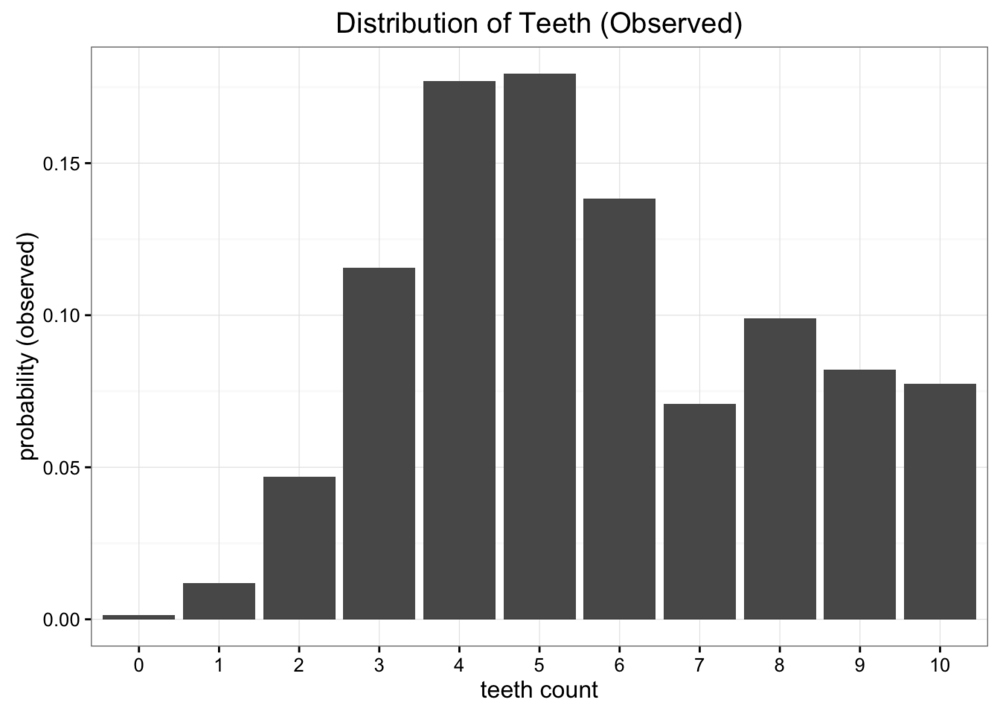
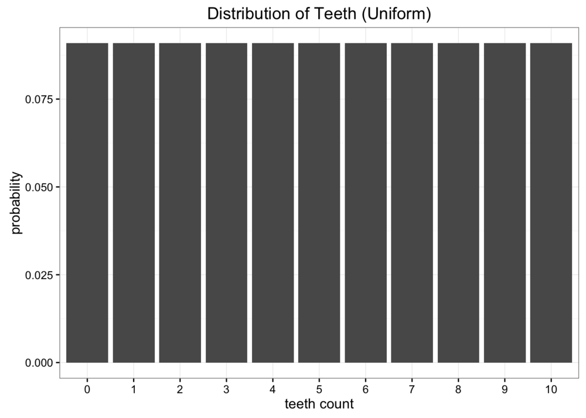
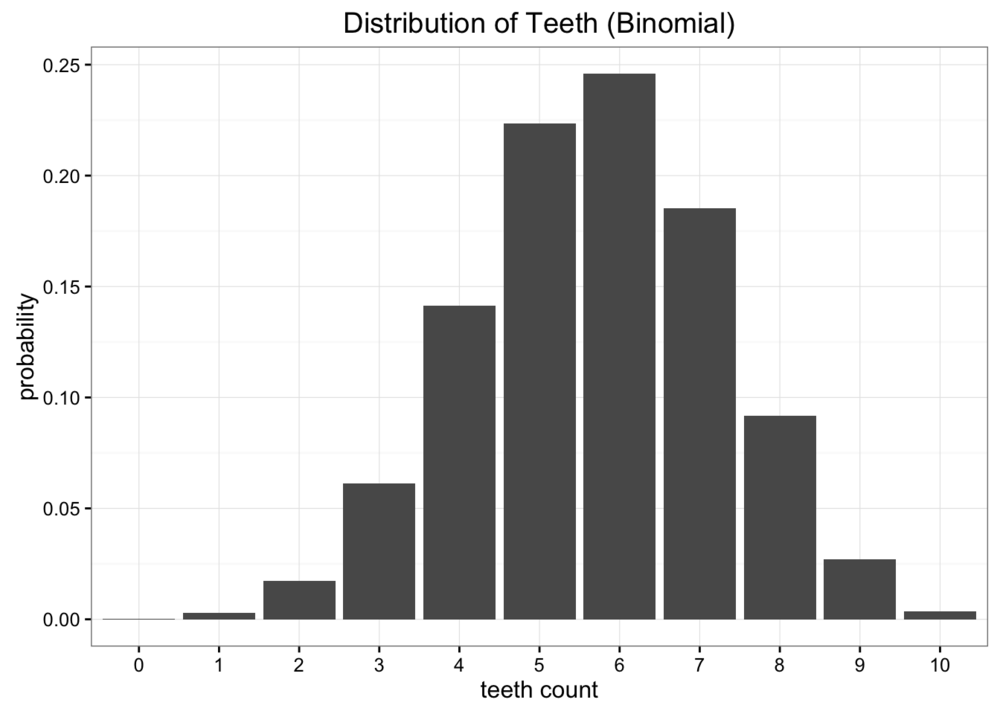
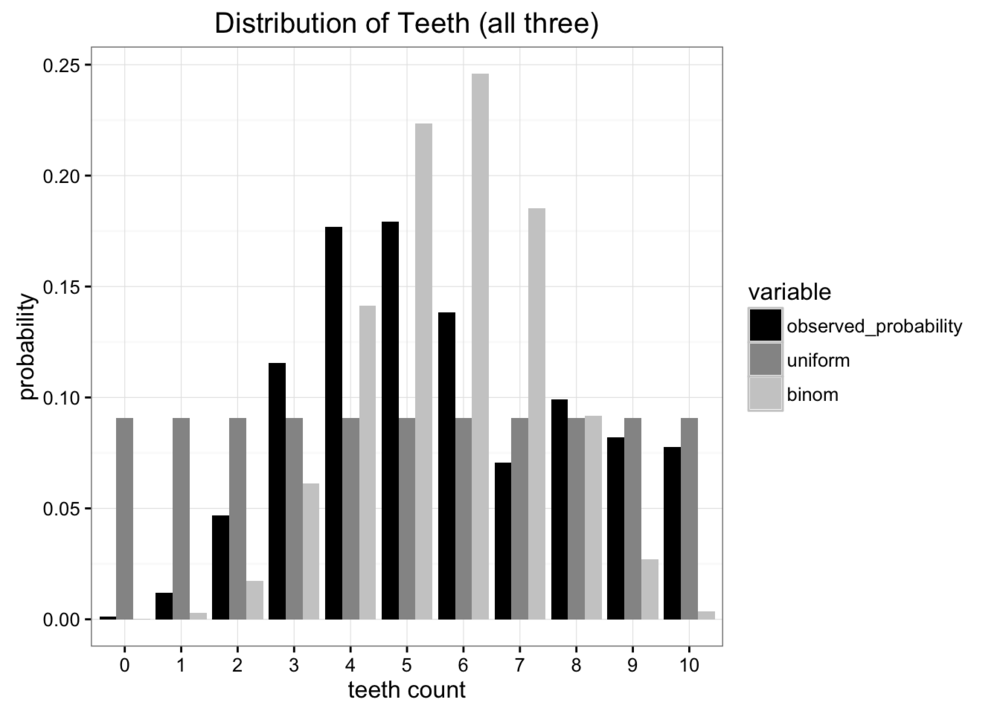
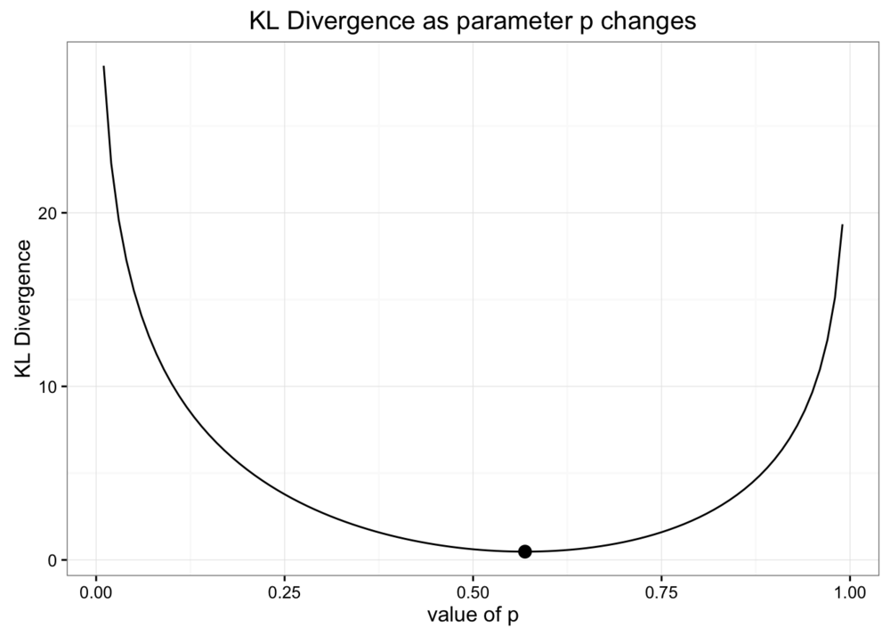
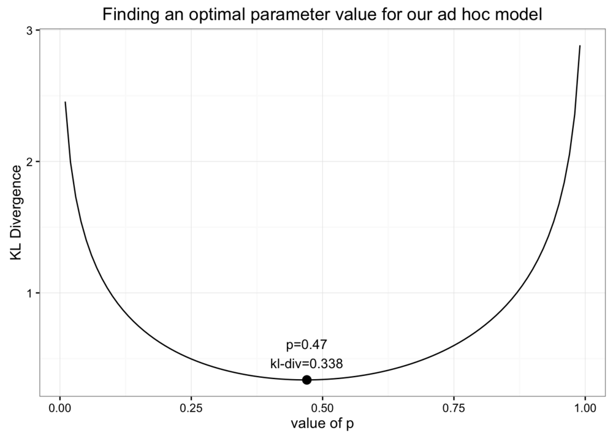
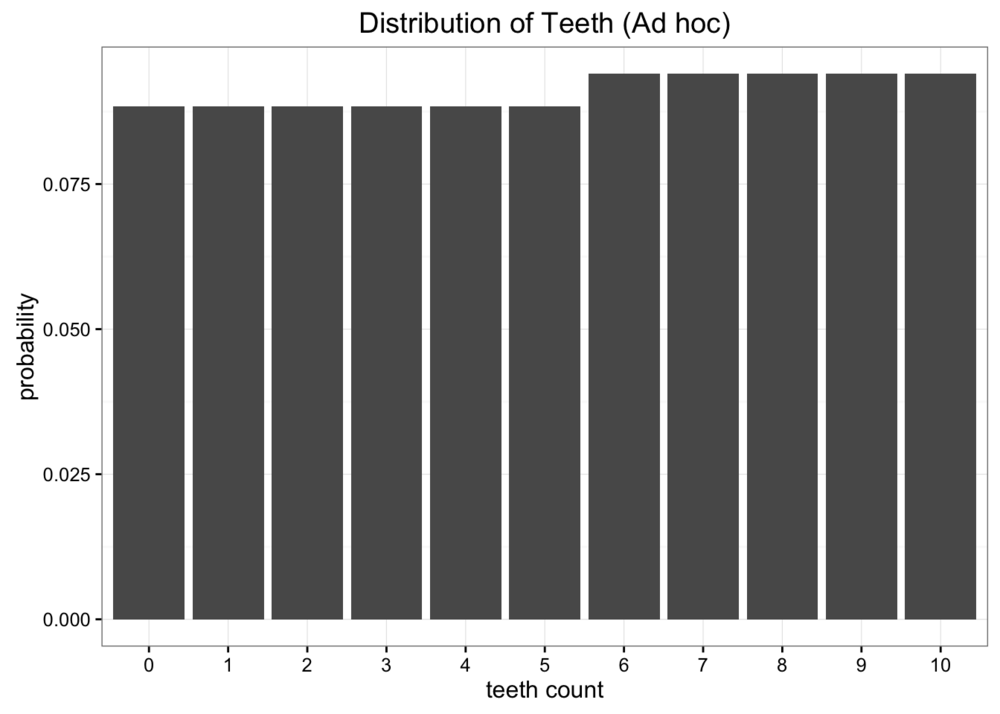

Kullback-Leibler Divergence Explained
Table of Contents
此篇文章翻译自Kullback-Leibler Divergence Explained。
这篇文章将研究衡量两个概率分布相似程度的量，Kullback-Leibler Divergence（通常被称为 KL 散度）。这个量常用于概率统计中，我们用简单的、近似的分布来替代观测到的、复杂的分布，而 KL 散度可以来衡量我们在使用这种近似时，有多少信息缺失。
我们先来看个例子。假设我们是太空科学家，我们在太空一个未知星球上发现了一个新生物——蠕虫，我们希望可以研究它们。我们发现这些蠕虫有10颗牙齿，但是由于种种原因，有些蠕虫牙齿掉落，在收集了很多样本之后，我们得出了每种蠕虫的牙齿数的概率分布：

尽管这个数据非常棒，但我们遇到了一些问题。我们距离地球太远了，发送数据时非常昂贵的，因此发送原始数据是不可行的。如果可以构建一个简单的模型来模拟观测到的数据，我们只需要发送回几个参数就可以代表这次的统计结果了。一种简单的模型是均分布，即一共有 11 种牙齿数目，每个牙齿数目占 \(\frac{1}{11}\)。

显然，我们的数据不是均分布，但我们也看不出它是什么分布。我们尝试再使用二项分布建模。假设之前数据的期望为 5.7，那么二项分布中概率\(p = 0.57\)。

比较两次近似分布和原数据分布，发现二者都不是很好的表征原数据，但是那个相对来说更好呢？

有很多种差异度量标准，但我们主要关心的是发送最少的数据量。上诉两个模型都只需要两个变量，牙齿数量和概率，因此最好的比较二者的好坏的方法就是比较哪个分布可以提供原数据分布更多的信息。这就是 KL 散度的来源。
1 分布交叉熵
KL 散度是从信息论中衍生出来的。信息论的主要研究目标是衡量数据种可以包含多少信息。信息论中一个最重要的衡量标准是交叉熵，记作\(H\)。概率分布的交叉熵定义为：
\begin{equation*} H = - \sum_{i=1}^{N} p(x_i) \cdot \log p(x_i) \end{equation*}如果使用\(\log_2\)计算，我们可以将交叉熵理解为：加密一条信息最少需要几个比特位。在本次案例中，信息是牙齿数量的原始数据分布，计算可以得到原始数据概率分布的熵值为\(3.12 bit\)。这个值告诉我们编码蠕虫牙齿数量概率的信息需要的二进制位数。
但是熵值没有给出压缩到最小信息的方法，压缩信息是个非常有趣的话题，但不了解它并不影响我们理解 KL 散度。交叉熵的关键之处在于，从理论上给出了加密信息的最小位数。理解了熵，我们就知道了有多少信息存储在数据中。接下来我们要分析使用近似分布来替代原始数据分布之后，损失了多少信息？
2 使用 KL 散度衡量信息损失程度
KL 散度的公式就是在交叉熵的公式上做了一些小小的改动，公式中不仅有原数据概率\(p\)还有近似分布的概率\(q\)。
\begin{equation*} D_{KL}(p \mid\mid q) = \sum_{i=1}^{N}p(x_i) \cdot (\log p(x_i) - \log q(x_i)) \end{equation*}KL 散度其实就是原始数据概率和近似分布概率的\(\log\)之差的期望。如果我们使用\(\log_2\)计算，我们可以将 KL 散度解释为：使用近似分布之后，损失的信息的期望值。可以将 KL 散度写成期望的形式：
\begin{equation*} D_{KL}(p \mid\mid q) = \mathbb{E}[\log p(x_i) - \log q(x_i)] \end{equation*}通常我们见到的是这种写法：
\begin{equation*} D_{KL}(p \mid\mid q) = \sum_{i=1}^{N} p(x_i) \cdot \log \frac{p(x_i)}{q(x_i)} \end{equation*}有了 KL 散度，就可以计算在近似过程种有多少信息损失了。
3 比较两次近似分布
我们分别计算两次近似分布的 KL 散度。
均分布：
\begin{equation*} D_{KL}(Observed \mid\mid Uniform) = 0.338 \end{equation*}二项分布：
\begin{equation*} D_{KL}(Observaed \mid\mid Binomial) = 0.447 \end{equation*}可以看到，二项分布的 KL 散度大于均分布的 KL 散度，说明二项分布损失的信息要比均分布多，因此如果要选一种分布代表观察到的具体信息，那么应该选择均分布。
4 散度 非 距离
你可能会想要把 KL 散度理解为距离这个概念，但其实散度并非距离。这是由于 KL 散度是发散不对称的。假如我们使用观察到的原始数据分布来近似二项分布，其散度为：
\begin{equation*} D_{KL}(Binomial \mid\mid Observed) = 0.330 \end{equation*}结果完全不同。
5 使用 KL 散度优化
当我们使用二项分布近似原始观察数据时，我们使用期望作为二项分布的参数。现在我们希望优化参数，使得 KL 散度值最小。从\(0 \sim 1\)选取参数，计算 KL 散度值，做图如下：

可以看出，使用期望作为参数，是使得二项分布近似的 KL 散度值最小的参数。
现在，我们使用 ad hoc 分布近似原始数据，将数据分为两部分，\(0 \sim 5\)和\(6 \sim 10\)两部分，
\begin{equation*} [6, 11] = \frac{p}{5};[0, 5] = \frac{1-p}{6} \end{equation*}那么如何找到这个模型最佳的参数呢？同样的，使得 KL 散度值最小的参数就是这个模型近似原始数据分布的最佳参数。

当\(p = 0.47\)时，KL 散度值最小，为 0.338，这个值和均分布的 KL 散度相当接近，画出图之后我们可以看出这个分布和均分布差不多。

从上面可以看出，我们可以通过 KL 散度优化模型，找到模型的最优解。
6 变分自动编码器和变分贝叶斯方法
如果你熟悉神经网络，你或许应该可以猜到上一节之后该去学什么。神经网络，在最一般的意义上，可以看作是函数逼近器，这意味着可以使用神经网络去逼近很多复杂的函数。神经网络优化的关键是使用目标函数，可以通过最小化目标函数的损失来训练神经网络。
我们可以使用 KL 散度来最小化近似分布时的信息损失，将 KL 散度和神经网络结合起来，可以学习非常复杂的数据分布。一种常见而学习方法称为“可分自动编码器”。这里提供一个学习变分自动编码器的教程。
更一般的是变分贝叶斯方法领域。 在其他文章中，我们看到了蒙特卡罗方法可以有效解决一系列概率问题。 尽管蒙特卡洛模拟可以帮助解决贝叶斯推理所需的许多难解积分，但这些方法在计算上也非常昂贵。包括变分自动编码器在内的变分贝叶斯方法使用 KL 发散来生成最佳近似分布，从而可以对非常困难的积分进行更有效的推断。要了解有关变分推理的更多信息，请查看适用于 python 的 Edward 库。